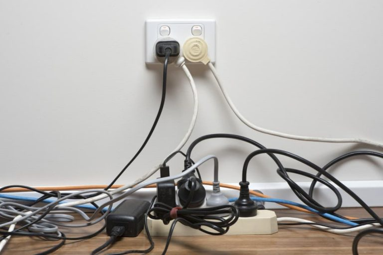
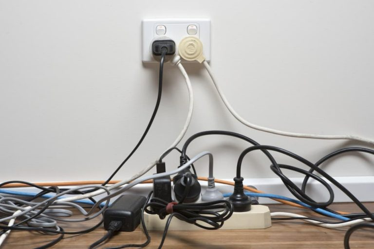

Welcome!
 HOLDER TEXT
HOLDER TEXT
HOLDER TEXT
Electrical shock is a serious condition that can occur when a person comes into contact with an electrical current. Electrical shock can cause a variety of injuries, including burns, muscle spasms, cardiac arrest, and even death.
To prevent electrical shock, it is important to be aware of the electrical hazards in your environment and to take steps to avoid them. Some common electrical hazards include:
.jpg) 

Electrical fires can occur when electrical wiring or equipment overheats or when there is a short circuit. Electrical fires can be very dangerous and can quickly spread to other parts of your home or business.
To prevent electrical fires, it is important to have your electrical wiring and equipment inspected and serviced regularly by a qualified electrician. You should also avoid overloading circuits and be careful not to use damaged electrical cords and plugs.

Ground fault circuit interrupters (GFCIs) are devices that protect you from electrical shock. GFCIs are required in all wet or damp areas, such as bathrooms, kitchens, and laundry rooms.
GFCIs work by monitoring the electrical current flowing through a circuit. If there is a difference in current between the hot and neutral wires, the GFCI will trip and shut off the circuit. This helps to prevent electrical shock and electrocution.


An arc flash is a sudden release of electrical energy that can cause serious burns, blindness, and even death. Arc flashes can occur when electrical equipment is not properly maintained or when it is misused.
To prevent arc flash, it is important to have your electrical equipment inspected and serviced regularly by a qualified electrician. You should also be careful when working on electrical equipment and always wear the proper personal protective equipment (PPE).


Children are especially vulnerable to electrical hazards. It is important to teach your children about electrical safety and to supervise them closely when they are around electrical outlets, appliances, and cords.
Here are some electrical safety tips for children: